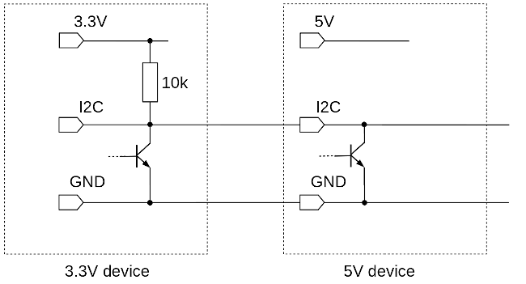

Why you can sometimes connect 3.3V and 5V I2C devices (and probably shouldn't)
 The microcontroller world is plagued by dual standards. Here,
I'm referring to the standards governing the voltage levels of
digital inputs and outputs. In practice, the voltages that signal a
logical zero and a logical one are closely related to the supply
voltage of the device. When all digital equipment ran on a 5V supply,
there wasn't a problem. With the increasing using of 3.3V supplies,
the situation has become more complicated.
The microcontroller world is plagued by dual standards. Here,
I'm referring to the standards governing the voltage levels of
digital inputs and outputs. In practice, the voltages that signal a
logical zero and a logical one are closely related to the supply
voltage of the device. When all digital equipment ran on a 5V supply,
there wasn't a problem. With the increasing using of 3.3V supplies,
the situation has become more complicated.
In the educational and hobbyist world, we often encounter this dual-supply problem when trying to connect something like a Raspberry Pi, or Pi Pico, to a peripheral (display, servo...) designed for a 5V supply. In general terms, the best advice is don't do it. 3.3 devices like the Pi are not generally tolerant of 5V levels on their inputs, and may be damaged.
Where I2C devices are concerned, though, the situation is slightly muddy. It's usually safe to mix voltage levels, and it may even work. In this article I'll try to explain in detail why it's safe, and what reason you might have for expecting it to work.
The I2C bus
I2C was conceived as a fast (for that time), short-distance communication bus, that could connect multiple devices with only three wires -- a data line (usually denoted SDA), a clock line (SCL), and a common ground. It's important, for the present discussion, that it is not conventional to carry any sort of supply voltage along with the three I2C lines.
At any given time, one device is in charge of the bus. That doesn't mean that it's transmitting -- although it might be. It just means that this In microcontroller applications, it is normally the controller that plays the active role, and any connected peripherals are passive. The I2C specification allows for multiple active devices, however.
How I2C works electrically
I'm not going to attempt to explain the I2C signalling protocol -- not that I could. Rather, what's relevant in this context is the electrical behaviour. I2C is designed to operate in an "open collector" mode, as shown in the diagram below.
2C diagram" width="650px"/>
This diagram shows a single I2C line although, of course, there will be two (SDA and SCL). Considering one line is fine, as the other will behave in exactly the same way.
The I2C bus is "pulled up" at exactly one point. That is, one device in the chain will connect the line to a positive voltage, via a resistor. In microcontroller applications it's usual to pull up the controller end. As the controller is a 3.3V device (in this diagram), we've pulled up to the 3.3V supply. The 5V end of the bus is not pulled up in this case.
It is in the 5V device where we see most clearly the "open collector" arrangement. The 5V device cannot source any current to the bus -- all it can do is pull down the voltage by turning on. When it does turn on, it sinks current from the 10k pull-up resistor, and pulls the bus voltage down to less than 1V or so.
So, in this case, the I2C bus voltage will vary between about 0V (ground) and about 3.3V, even though a 5V device is connected.
Why is this safe?
The arrangement shown in the circuit diagram above will not cause damage to either the 3.3V or 5V device. This is because the 5V device cannot supply any current to the 3.3V device. When the 5V device's transistor is turned off, the bus voltage is governed by transistor in the 3.3V device, which never sees a collector voltage higher than its own supply. When the 5V device's transistor is turned on, then the bus voltage is held low, regardless of what any other transistor may be doing. Any number of 3.3V and 5V devices can be safely mixed this way.
But does it work?
That's a difficult question; it reduces to: can the 3.3V bus voltage turn on an input in the 5V device? After all, the bus voltage will swing between 0V and about 3.3V; it isn't usually the 0V level that's problematic.
Conventional TTL logic devices are rated to accept as a logical "one" any voltage over 3.33V (that's two thirds of the 5V supply voltage). A logical "zero" is 1.66V. Between 1.66V and 3.33V the interpretation of the input voltage is uncertain. We can see that the 3.3V logical "one" provided by the 3.3V device is just barely enough to trigger the 5V device.
With more modern technologies than TTL, the situation is more complicated. In practice, you'll have to look in the manufacturer's data sheet to see the specified input voltages. For example, the PCF8547 I2C shift register -- a very widely used part in I2C periperhals -- has a specified logic "one" level of 0.7V of supply. With a 5V supply that's 3.5V. The 3.3V logic "one" looks increasingly inadequate.
Yes, but does it work?
In practice, it very often does. At least, with only a couple of devices on the I2C bus, at relatively low speeds, with relatively short connections, in an electrically-friendly environment. Should you use this kind of connection in a medical device or a missile silo? No.
How can things go (even more) wrong?
In my sample circuit, I showed the most favourable situation -- a 3.3 microcontroller connected to a 5V peripheral. Using a 5V controller (like most AVR-style controllers) with a 3.3V peripheral can also work -- but the pull-up resistors need to be on the peripheral end, not the controller end.
What we don't want to do is pull up to 5V when there are 3.3V devices connected. So long as the pull-up resistor is large enough, it probably won't damage the 3.3V devices. But don't bet your house on it, and don't expect it to work. It's worth checking that the 5V devices don't have pull-up resistors -- this is easy to do with an ohmmeter.
Even in favourable circumstances, there are likely to be problems if the lines are long, or there is a lot of electrical noise in the environment.
What's the alternative?
There is a very widely-used circuit that can do the bidirectional level-matching required when mixing 3.3V and 5V I2C devices. It requires only one MOSFET and two resistors. The circuit is thoroughly described and analysed in this application note from Philips.
This circuit is so widely used that it is available on pre-assembled modules, which cost only about 50p in quantity. Usually the module contains four or six separate level shifters, so it's probably no more expensive than buying the individual components, unless you're in mass production.
Conclusion
On websites, and in hobbyist kits for Raspberry Pi and Arduino, you'll often see I2C devices connected that have different supply voltages. This is (usually) safe and, in non-critical applications, tends to work. In production, though, level-shifting circuits are inexpensive, and much more reliable.